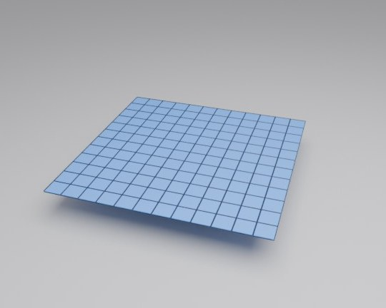
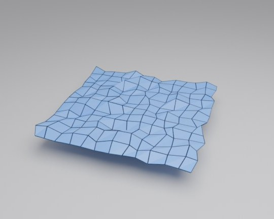

Bonus lesson
Randomize
Randomize moves the selected vertices by small random amounts. It works in Edit Mode. Find it under Transform › Randomize in the Mesh menu. The manual lists no shortcut for it.


The options
The manual lists these settings for the tool:
- Amount is the distance of the displacement.
- Uniform adds a random offset of the amount.
- Normal adds a random offset to the displacement normal.
- Random Seed is an offset to the random transformation. A different seed gives a new result.
The manual describes the tool as displacing the vertices of a mesh along their normal. It also points to the Object Mode Randomize Transform tool, which does a similar job on whole objects.
Read the manual page on Randomize.
Try it
This exercise is our own suggestion and has not been run step by step in the GUI. Add a plane, enter Edit Mode and subdivide it a few times. Select everything and choose Transform, then Randomize from the Mesh menu. Change the Amount and the Random Seed in the tool panel and watch the surface change. Use Ctrl+Z to undo.